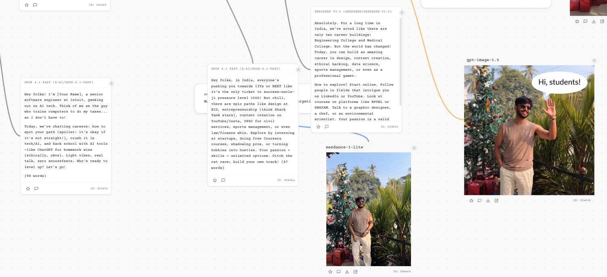
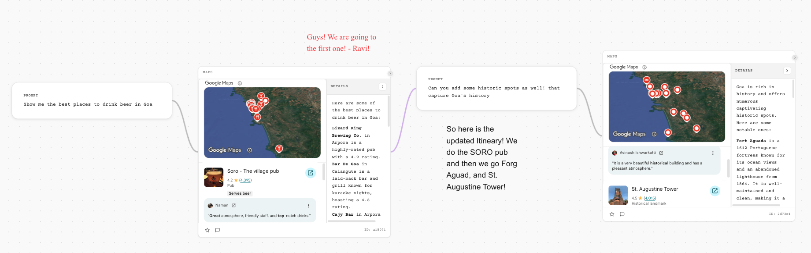
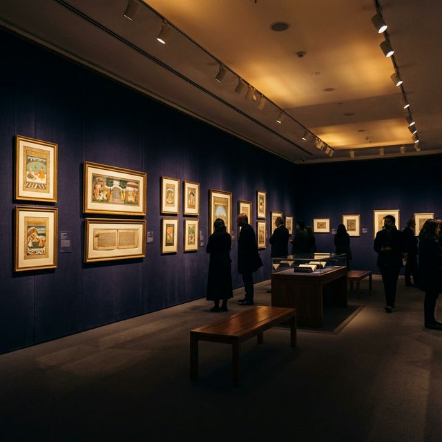

Xbox · Microsoft
NDA
AURA: Agentic User Research
AI-assisted agentic systems for scalable user research — automating
analysis while keeping researchers in the loop.

Meta
Facebook Home for Gen-Z
Generative research exploring emotionally-aware feed experiences for
Gen-Z at Meta Top of Home.

LLM × Design
Ooha: AI Canvas
AI-powered canvas for collaborative ideation — transforming raw
ideas
into structured concepts with LLM workflows.

ACM DIS '25 — Best Paper
Shloka: Climate Action Games
The first climate game integrating authentic Hindu religious
practices — four months fieldwork, Best Paper award.
LLM × Research
Cursor Research
AI canvas with human-in-the-loop chunking, thematic analysis, and
RAG-powered semantic search.
/images/Group 245 (1).png)
CHI PLAY '26
TGP: Gamified Prompts
A taxonomy for embedding game mechanics into LLM prompts — turning
chatbots into game engines for learning.

Google
Google Trips
Travel planning and discovery — designing for intent-based
exploration and day-by-day itineraries.

CHI PLAY '24
Religious Inclusivity in Games
Understanding how players from diverse faith backgrounds experience
games and what representation they need.

Best Seller
Buy Now
Tales of Dharma
Narrative tabletop game exploring dharma and moral choice — best
seller with 1000+ copies sold.
- Cursor Research: AI Qualitative Analysis
- Ooha: AI Canvas
- AURA: Agentic User Research
- Google Trips
- Religious Inclusivity in Games
- Facebook Home for Gen-Z
- Shloka: Climate Action Games
- TGP: Gamified Prompts Taxonomy
- Tales of Dharma
- Game Play Reflection Systems
- AstraVerse Character Design
- AI Chess Coach
- Move: Workflow Optimization
AI in Education & Learning
- Listening with Language Models: Using LLMs to Collect and Interpret Classroom Feedback
- Strategies for Self-Regulated Learning with AI in an Undergraduate Research Methods Course
- An Instructor's Lens into the Role of AI in Teaching Experimental Research via Gamification
- Open Player Modeling - Using AI to help Reflection and Learning in Serious Games
- "Ah! I see" - Facilitating Process Reflection in Gameplay through a Novel Spatio-Temporal Visualization System
- Mining Player Behavior Patterns from Domain-Based Spatial Abstraction in Games
AI and Culture
- "Pray For Green, Play For Green": Integrating Religion into Climate Change Serious Games
- Shloka: Developing Climate Change interventions through a lens of Religion and Videogames
- A Topic Modeling Approach Towards Understanding the Discourse between Religion and Videogames on Reddit
- A Visual Ethnographic Study at Cultural Spaces to Identify Character Creation Opportunities
- AstraVerse: Establishing a Culturally-Sensitive Framework for Interactive Narrative
Design System
Magazine UI
A cohesive design system for magazine-style interfaces — typography,
layout, and components for editorial digital products.
Design System
Utility Design System
Condensed type, tokens, components, and patterns for data-dense
interfaces.

Typography × Heritage
RK Joshi Design System
A calligraphic UI design language honoring the legacy of Indian
typographer R.K. Joshi.

UI Patterns
Currency Showcase
Visual showcase of currency and financial UI patterns — clarity
and trust in money-related interfaces.
Tool
Gradient Generator
A tool for creating, previewing, and exporting custom CSS
gradients for designers and developers.